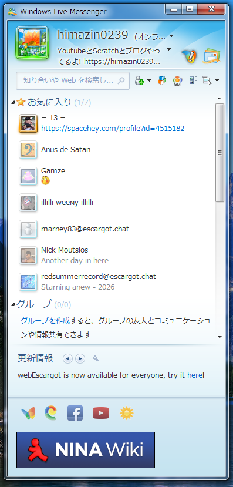

himazin0239のブログへようこそ!
色々とアップしていく、
そんなブログです。
MSN・Windows Live Messengerが現代に復活!?
escargotというものを入れてみた!
しっかりと使える模様...
2025/07/09
1.前置き
俺はとにかく2009年代のものが大好物! そしてwindows 7とvistaがお気に入りのOS!(まあこのブログとかminecraftのためにもともとwindows 7だったのをwindows
11にしたけどね!)
そんな中、俺はWindows Live Messengerというものをどっかの日に見つけて、俺はこう思った、
「あーこれ今でも使えるようになったらナー」
と...
はいありました!その名もescargot!
2.そもそもescargotって何?ｵｲｼｲﾉ?
説明しよう! escargotとはもうサ終したwindows live messgengerを専用のパッチを当てて、さらにescargot専門のアカウントでログインするといとも簡単に使うことができるんです!

↑escargotを適用したwindows live messenger(多分vista時代のもの 2009だと動かなかった)
3.実際に使えるの?
Answer:実際に使えますこれ

↑なんかトルコ人とフレンドになったけど相変わらず話す機会がないので画像はネットから拾ってきたもの
4.感想
まあなんやかんやで使えるようになったのは結構ありがたい! まあこれからも使っていこうと...
↓結論
思うわけねぇだろ██め なんなん?このdiscordの下位互換はさぁ! 普通にarochat(中身discordのwlm2009の見た目してるやつ)使えばええやん
お知らせ